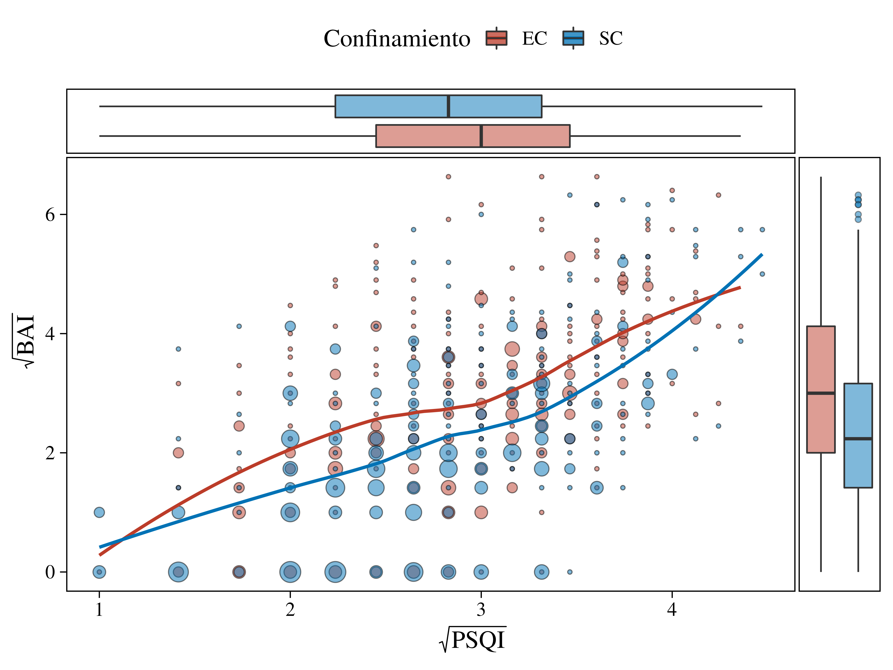
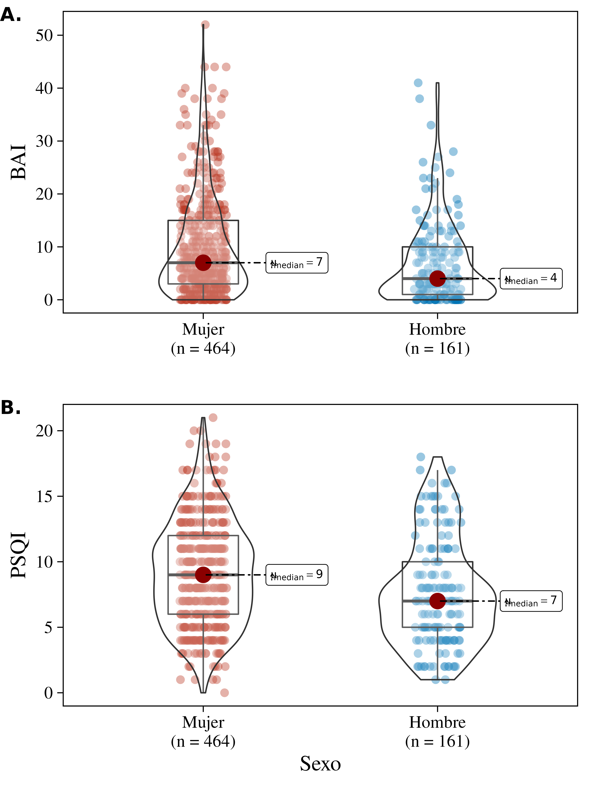

Para acceder a los datos del estudio usaremos nuestro paquete AnxietySleep y para la manipulación de los datos usaremos el paquete data.table.
Si no tienes instalado nuestro paquete, puedes instalarlo usando el siguiente comando:
# install.packages("devtools")
devtools::install_github("NIM-ACh/AnxietySleep",
build_vignettes = TRUE) # Para construir la viñeta
# del material suplementario
# Posteriormente y para ver esta viñeta puedes usar el siguiente comando:
vignette("Supplementary", package = "AnxietySleep") Mientras que para instalar los otros paquetes (si no los tienes instalado), puedes usar el siguiente código:
# Paquetes a usar de manera complementaria
.pkgs <- c("data.table", "ggplot2", "ggside", "ggsci",
"ggpubr", "ggstatsplot", "gtsummary", "gt",
"magrittr")
# Proceso de instalación
install.packages(.pkgs)Una vez todo instalado, puedes cargar las librerías usando los siguientes comandos:
library(AnxietySleep) # Paquete del estudio
library(data.table) # Manipulación de los datos
library(magrittr) # Para conectar funciones
# Librarías para la generación de gráficos
library(ggplot2) # Para gráfico principal
library(ggside) # Distribuciones marginales
library(ggsci) # Paleta de colores
library(ggpubr) # Unir los gráficos 2A y 2B
library(ggstatsplot) # Para generar la figura 2
# Librerias para la generación de tablas
library(gt)
library(gtsummary)Ver código
# Eliminamos dos valores
remove_outliers <- quote(-c(which.min(pits_global), which.max(pits_global)))
fig1 <- ggplot(data = dataset[i = eval(remove_outliers)],
aes(x = sqrt(pits_global),
y = sqrt(beck_global))) +
# Hacemos el tamaño de los puntos relativo al número de observaciones
geom_count(shape = 21, color = "black", aes(fill = zona), show.legend = FALSE, alpha = 0.5) +
# Usamos la paleta de colores del 'New England Journal of Medicine'
scale_color_manual(values = pal_nejm()(2), aesthetics = c("fill", "color")) +
# Generamos la línea de regresión LOESS
geom_smooth(method = "loess", se = F, aes(col = zona)) +
# Generamos las distribuciones marginales
geom_xsideboxplot(mapping = aes(y = zona, fill = zona), orientation = "y",
outlier.shape = 21, outlier.alpha = .5, alpha = 0.5) +
geom_ysideboxplot(mapping = aes(x = zona, fill = zona), orientation = "x",
outlier.shape = 21, outlier.alpha = .5, alpha = 0.5) +
# Y eliminamos las etiquetas de los ejes de estas distribuciones marginales
scale_xsidey_discrete(guide = guide_none()) +
scale_ysidex_discrete(guide = guide_none()) +
# Modificamos las etiquetas de los ejes
labs(x = expression(sqrt("PSQI")),
y = expression(sqrt("BAI")),
col = "Confinamiento",
fill = "Confinamiento") +
# Añadimos un tema para mejorar la estética
theme_linedraw(base_family = "Times",
base_size = 16) +
# La leyenda la dejamos arriba del gráfico y eliminamos las lineas
# del 'grid' del gráfico
theme(legend.position = "top",
panel.grid = element_blank(),
ggside.panel.scale.x = .15,
ggside.panel.scale.y = (.15 * 3 / 4))
Figura 1. Gráfico de densidad Kernel bidimensional con superposición de puntos entre el puntaje global del \(\sqrt{PSQI}\) y \(\sqrt{BAI}\) para EC y SC. Las líneas representan la mediana para cada eje.
Ver código
p1 <- ggstatsplot::ggbetweenstats(
data = dataset, x = sexo, y = beck_global,
type = "np", xlab = "", ylab = "BAI", results.subtitle = FALSE,
palette = "default_nejm", package = "ggsci", k = 0,
ggtheme = theme_linedraw(base_family = "Times", base_size = 16),
ggplot.component = list(theme(panel.grid = element_blank())))
p2 <- ggstatsplot::ggbetweenstats(
data = dataset, x = sexo, y = pits_global,
type = "np", xlab = "Sexo", ylab = "PSQI", results.subtitle = FALSE,
palette = "default_nejm", package = "ggsci", k = 0,
ggtheme = theme_linedraw(base_family = "Times", base_size = 16),
ggplot.component = list(theme(panel.grid = element_blank())))
fig2 <- ggpubr::ggarrange(p1, p2, labels = c("A.", "B."), ncol = 1, hjust = 0)
Figura 2. Distribución bivariada: figura 2A muestra relación entre sexo y sintomatología ansiosa (BAI), \(\ln(W)\) = 10.69, p < 0.001, \(\widehat{r}_{biserial}\) = 0.21, CI95%[0.11, 0.31]; figura 2B indica relación entre sexo y calidad de sueño (PSQI), \(\ln(W)\) = 10.7, p < 0.001, \(\widehat{r}_{biserial}\) = 0.22, CI95%[0.12, 0.32]. La mediana de los valores es presentada con un punto rojo.
Ver código
# Generamos los datos para la tabla
tbl_data <- copy(dataset)[, `:=`(
sexo = `attr<-`(sexo, "label", "Sexo"),
beck_global = `attr<-`(beck_global, "label", "Puntaje BAI"),
pits_global = `attr<-`(pits_global, "label", "Puntaje PSQI")
)][]
# Etiquetas en español
gtsummary::theme_gtsummary_language("es")
# HAcemos la tabla para EC
ec_tbl <- gtsummary::tbl_summary(
data = tbl_data[zona == "EC"],
by = cat_edad,
include = c(sexo, beck_global, pits_global),
statistic = gtsummary::all_continuous() ~ "{median} ({IQR})") %>%
gtsummary::add_p(pvalue_fun = function(x) gtsummary::style_pvalue(x, digits = 3)) %>%
gtsummary::modify_header(update = gtsummary::all_stat_cols() ~ "**{level} años**<br>N = {n} ({style_percent(p)}%)")
# Y la tabla para SC
sc_tbl <- gtsummary::tbl_summary(
data = tbl_data[zona == "SC"],
by = cat_edad,
include = c(sexo, beck_global, pits_global),
statistic = gtsummary::all_continuous() ~ "{median} ({IQR})") %>%
gtsummary::add_p(pvalue_fun = function(x) { gtsummary::style_pvalue(x, digits = 3) }) %>%
gtsummary::modify_header(update = gtsummary::all_stat_cols() ~ "**{level} años**<br>N = {n} ({style_percent(p)}%)")
# Fusionamos las tablas
tbl <- gtsummary::tbl_stack(tbls = list(ec_tbl, sc_tbl), quiet = TRUE) %>%
gtsummary::modify_footnote(gtsummary::everything() ~ NA_character_) %>%
gtsummary::as_gt()
# Añadimos los índices de significancia a las filas específicas
tbl <- tbl %>% gt::text_transform(
locations = gt::cells_body(columns = "stat_1", rows = c(4,9)),
fn = function(i) paste0(i, "<sup>x</sup>")
) %>% gt::text_transform(
locations = gt::cells_body(columns = "stat_2", rows = c(4)),
fn = function(i) paste0(i, "<sup>y</sup>")
) %>% gt::text_transform(
locations = gt::cells_body(columns = "p.value", rows = c(1,6)),
fn = function(i) paste0(i, "<sup>a</sup>")
) %>% gt::text_transform(
locations = gt::cells_body(columns = "p.value", rows = c(4:5,9:10)),
fn = function(i) paste0(i, "<sup>b</sup>")
)
# Añadimos etiquetas a los grupos de filas
tbl <- tbl %>%
gt::tab_spanner(label = gt::md("**Grupos etarios**"), columns = paste0("stat_", 1:4)) %>%
gt::tab_row_group(label = gt::md("**Zona - SC**"), rows = 6:10) %>%
gt::tab_row_group(label = gt::md("**Zona - EC**"), rows = 1:5) | Característica | Grupos etarios | p-valor | |||
|---|---|---|---|---|---|
|
18-25 años N = 141 (49%) |
26-40 años N = 80 (28%) |
41-50 años N = 38 (13%) |
>50 años N = 28 (9.8%) |
||
| Zona - EC | |||||
| Sexo | 0.814a | ||||
| Mujer | 113 (80%) | 63 (79%) | 28 (74%) | 21 (75%) | |
| Hombre | 28 (20%) | 17 (21%) | 10 (26%) | 7 (25%) | |
| Puntaje BAI | 13 (15)x | 9 (11)y | 7 (7) | 4 (6) | <0.001b |
| Puntaje PSQI | 10 (5) | 8 (6) | 10 (6) | 8 (6) | 0.075b |
| Zona - SC | |||||
| Sexo | 0.808a | ||||
| Mujer | 25 (66%) | 94 (70%) | 71 (74%) | 49 (70%) | |
| Hombre | 13 (34%) | 40 (30%) | 25 (26%) | 21 (30%) | |
| Puntaje BAI | 9 (12)x | 4 (11) | 4 (8) | 4 (7) | 0.017b |
| Puntaje PSQI | 7 (4) | 8 (6) | 8 (6) | 8 (5) | 0.519b |
Tabla 1. Características sociodemográficas agrupadas por zonas, grupos etarios y parámetros psicométricos. Los valores son presentados por rango etario como Mdn (IQR) para puntaje de BAI y PSQI. Para las variables sexo y grupos (EC, en confinamiento; SC, sin confinamiento) se definen como n (%). El p-valor de cada variable corresponden a: a, prueba \(\chi^2\) de Pearson; b, prueba de suma de rangos de Wilcoxon; x, indica p < 0.05, comparado con los otros grupos; y, indica p < 0.05 comparado con >50 años.